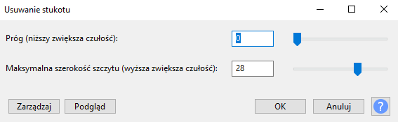

Próbkowanie: odzczytywanie poziomu sygnału akustycznego w danej chwili i zpisywanie jako liczby.
Kwantyzacja: każdej próbce przyporządkowuje sie zn-poziomów kwantyzacji.
Kodowanie: poziomy kwantowe zostają przekształcone w kod binarny.
Usuwanie stukotu: Jest to efekt służący głównie do usuwanie kliknięć myszki i klawiatury w ścieżce dźwiękowej. Próg (niższy zwiększa czułość): Wprowadzenie niższej wartości lub przesunięcie suwaka w lewo spowoduje wykrycie słabszych kliknięć. Zbyt niskie ustawienie może spowodować wykrywanie fałszywych kliknięć i uszkodzenie dźwięku. Ustawienie go zbyt wysoko może pozostawić słyszalne kliknięcia, które wolałbyś usunąć. Maksymalna szerokość szczytu (wyższa zwiększa czułość): Wprowadź wartość lub przesuń suwak, aby ustawić długość szpikulca, który jest uważany za kliknięcie. Ustawienie zbyt wysokiego poziomu może spowodować wykrywanie fałszywych kliknięć i uszkodzenie dźwięku. Ustawienie zbyt nisko może pozostawić słyszalne kliknięcia, które wolałbyś usunąć.
Przepłyność: im większa tym jakość pliku lepsza.